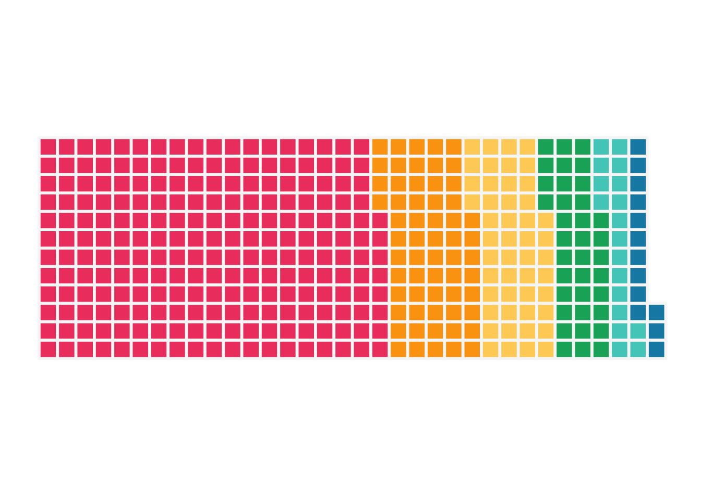

For no particular reason, I felt like a banner on the landing page was needed. The code to produce it can be read below. It’s based on Isabella Benabaye’s elegant representation of her life in months using a waffle chart, and reminds me of a Wait But Why post. I’ve used her code as a starting point to produce my own version, with some added fuzziness to mask my exact age (out of an abundance of internet caution, rather than vanity! Otherwise you’d be asking for the name of my first childhood pet next).
I’ve a added a tweaked version as a function to my GitHub, which generates the plot from a date vector.
#This code was first copied from
#https://github.com/isabellabenabaye/life-chart,
#and then adjusted for my own needs.
library(tidyverse)
library(lubridate)
library(waffle)
#xaringanExtra::style_panelset_tabs(foreground = "honeydew")
# Create the data-----
life_data <-
tibble(months = factor(rep(month.abb[1:12], 101), levels=month.abb[1:12])) %>% ## make months
tibble(age = rep(0:100, each = 12) ) %>%
rowid_to_column("row_name") ## add column for row number
# add the "eras" to be colored in the waffle chart
life_data <- life_data %>%
mutate(era = fct_inorder(case_when(row_name < 225 ~ "a",
row_name < 285 ~ "b",
row_name < 333 ~ "c",
row_name < 369 ~ "d",
row_name < 387 ~ "e",
row_name < 400 ~ "f"
)))
# # Waffle chart-----
life_in_months <- life_data %>%
count(era) %>% ## the count of each era is the number of months in that era
ggplot(aes(fill = era, values = n)) +
geom_waffle(color = "#F7F7F7", n_rows = 12, size = 1, flip = FALSE) + ## make each row a year/12 months
scale_fill_manual(name = "",
values = c("#EF476F","#FCA311","#FFD166","#0EAD69","#4ECDC4","#118AB2")) + ## assign colors to the eras
coord_equal() +
labs (NULL) +
theme(legend.position = "none", rect = element_blank(), axis.ticks = element_blank(),plot.margin = unit(c(0.1, 0.1, 0.1, 0.1), "cm") ) +
theme_enhance_waffle()
#
life_in_months